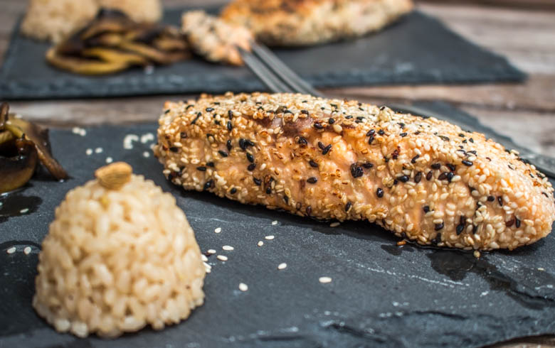

Saumon sésame ou plutôt saumon pané au sésame!

Ici vous trouverez une recette ultra rapide pour manger différemment le saumon : le saumon sésame.
Le saumon sésame ou plutôt comment je mange mon saumon en ce moment! Je ne sais pas si je peux dire que cet article est une nouvelle « recette » car ce n’en est pas vraiment une! Je dirais que c’est plutôt une façon originale de manger son saumon histoire de changer de temps en temps! Habituellement je le mange en papillote mais j’avais envie d’essayer autre chose! C’est donc une recette courte mais efficace en goût et c’est ce qui compte!! Un pavé de saumon, des graines de sésame le tout accompagné de riz à la cardamome et de champignon de paris! Un vrai régal pour un diner léger 😉
La première fois que j’ai préparé mon saumon ainsi j’avais également utilisé du cream cheese mais à la cuisson ça n’avait pas vraiment tenu et j’ai trouvé cela meilleur sans! J’espère que ce petit article vous plaira et vous donnera envie d’essayer si vous ne connaissiez pas déjà!
Ingrédients
- Pavé de saumon - 2
- Graines de sésame
Instructions
- Enlever les arrêtes des pavés de saumon
- Dans une assiette verser les graines de sésame (j'ai pris des noires et des blanches)
- Rouler les saumons dans les graines de sésame jusqu'à ce qu'ils soient totalement recouverts Vous pouvez au préalable poivrer les saumons avec du poivre noir puis les rouler
- Dans une poêle, verser un peu d'huile d'olive
- Faire cuire les saumons 2 minutes de chaque cotés (ou plus si vous les aimez davantage cuits)

Les tips de la communauté
Le saumon pané au sésame obtient un accueil très positif. Lecteurs aiment le concept simple et élégant. Quelques suggestions de variantes avec wasabi ou autres accompagnements.
Astuces
- L'association avec un riz noir ou noir est un excellent accompagnement
- Panure facile à préparer et visuellement séduisante
- Recette rapide et savoureuse pour un repas en semaine
Variantes suggérées
- Remplacer par une panure avec graines de sésame au wasabi pour plus de saveur
- Servir avec du riz noir pour une présentation plus élégante
- Possibilité de cuire au four pour une alternative moins grasse
Ajustements signalés
- que je teste 🙂